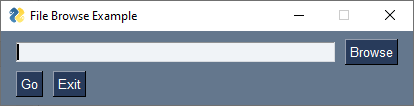
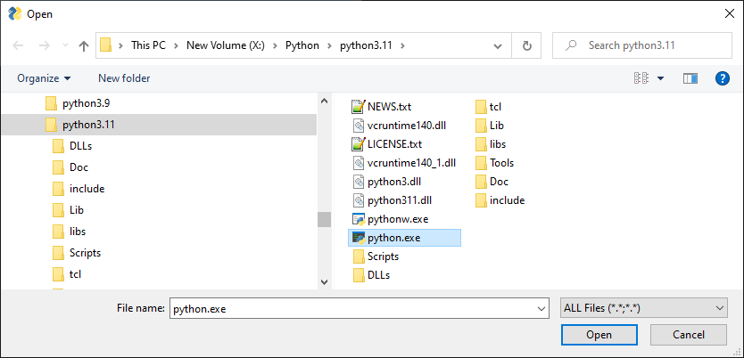
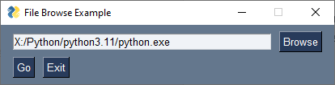
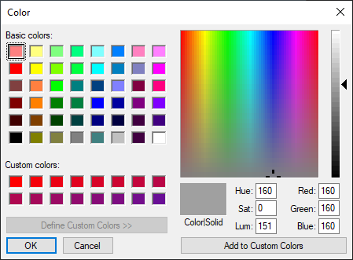
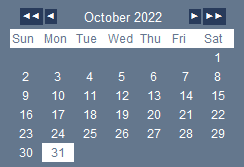
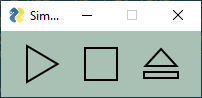

Button
Button call reference
PreDefinedButtons call reference
Basic Layout
Almost every window has a button, although one isn't required. There are numerous other ways you could generate events that lead to a window being closed, but a button is common in most windows. While common, Buttons have a large number of options and capabilities.
You can also simulate buttons by using other Elements such as an Image element.
Regardless of the Category of Button, all Buttons contain some shared parameters such as the text shown on the button, the key, and many more parameters that you'll kind in the Call Reference documentation.
There are 36 parameters available to you when you create a Button element. Not every parameter will be described here. The Call Reference describes each parameter.
Events
Plain buttons return the key as an event when the button is clicked. Chooser buttons do not generate these click events.
Values Dictionary
Buttons normally do not have a values dictionary entry. If they are the target of a chooser button, then they can have a value in the values dictionary.
Categories
Buttons can be broken down into 2 main categories.
There are "Simple Buttons":
- Plain
- Dummy
- Realtime
There are "Chooser Buttons":
- Folder Browse
- File Browse
- Files Browse
- File SaveAs
- File Save
- Calendar Chooser
- Color Chooser
There are also "Shortcut/Predefined Buttons":
- OK
- Ok
- Submit
- Cancel
- Yes
- No
- Exit
- Quit
- Help
- Save
- SaveAs
- Open
Simple Buttons
Plain
If you use a Button element by writing the text sg.Button in your layout, then you're using a "plain button". These buttons generate an event when clicked and released.
Realtime
To add a Realtime Button to your layout, you'll use the RealtimeButton element by entering sg.RealtimeButton in your layout.
Realtime buttons generate a continuous stream of events as long as the button is held down. A good example of when you would want this kind of button is if you're making a remote control to control a car or drone. Once you release the button, the events stop being generated.
Dummy
A Dummy button is added to your layout by typing sg.DummyButton. These are special purpose buttons that will close a window without generating an event. Dummy buttons are used with Async Windows. These windows are not closed explicitly by your code. Instead, PySimpleGUI closes the window for you when the button is clicked.
Dummy buttons are used internally with PySimpleGUI to implement non-blocking Popup windows.
Chooser Buttons
Chooser buttons are used to get information from your user via a system dialog that is provided by the underlying GUI framework and then fill in a "target element" with that information.
The best example of a chooser button is a FileBrowse button. When this button is clicked, an OS standard file selection dialog is shown, a file is chosen and the filename is then filled into a "Target Element", usually an Input element.
Chooser buttons were an early design construct of PySimpleGUI that has been slowly been migrated away from. The design direction for PySimpleGUI has been to move away from Chooser buttons and instead users add plain buttons to their layout and then call a popup function to show the system dialog. This is a simpler approach and offers more flexibility.
The complexity of a chooser button comes from the need to specify a parameters that are specific to the item being chosen. Once a window is created with a layout, it is more difficult to update the parameters specified in the layout than if the button were a plain button and the parameters instead were passed to a popup call in the event loop.
Target For the Choice
Chooser buttons place the result of your choice into a "target" element. Usually this is an Input element.
The reason you want to use an Input element for filename inputs is that some users prefer to copy a path from a file explorer program and then paste it into the GUI. Without an Input element there would be an additional step to do the paste. The user also wouldn't be able to see the choice they had made if there was no visible targer
Target Example - FileBrowse
We'll use a FileBrowse button in the example for Targets. The pairing of Input and FileBrowse is the most common use of a Chooser Button and looks something like this:
import PySimpleGUI as sg
layout = [[sg.Input(key='-IN-'), sg.FileBrowse()],
[sg.Button('Go'), sg.Button('Exit')]]
window = sg.Window('File Browse Example', layout)
event, values = window.read()
print(f'File chosen: {values["-IN-"]}')
window.close()
This is the window the code produces:

Notice that there is no target specified in the FileBrowse in this example. If no target is specified, then the target is assumed to be the element to the left of the Chooser Button.
A more explicit way of coding the same result would be to specify the Input element's key as the target:
This will enable you to move the Input element around in your layout and your code will function correctly regardless of where you locate the Input element.
When you click on the Browse button, you'll be shown the standard, OS-provided, file open dialog box.

If you make a selection and click "Open", then the Target element will be filled in with the filename matching your choice.

If the user clicks the "Cancel" button instead of the "Open" button, then the value in the Input element is not changed.
Legacy Target Format
The Target comes in two forms. 1. Key 2. A legacy (row, column) format
Targets that are specified using a key will find its target element by using the target's key value. This is the preferred method.
If the Target is specified using (row, column) then it utilizes a grid system. The rows in your GUI are numbered starting with 0. The target can be specified as a hard coded grid item or it can be relative to the button.
The (row, col) targeting can only target elements that are in the same "container". Containers are the Window, Column and Frame Elements. A File Browse button located inside of a Column is unable to target elements outside of that Column.
The default value for target is (ThisRow, -1). ThisRow is a special value that tells the GUI to use the same row as the button. The Y-value of -1 means the field one value to the left of the button. For a File or Folder Browse button, the field that it fills are generally to the left of the button is most cases. (ThisRow, -1) means the Element to the left of the button, on the same row.
If a value of (None, None) is chosen for the target, then the button itself will hold the information. Later the button can be queried for the value by using the button's key.
Invisible Targets
If you do not want the value of the choice to be visible to your user, the set the Input element to visible=False so that it's not shown to the user.
Notification Choice Was Made
If you want to be told, immediately, that a choice was made, instead of waiting for a Button in your window to be clicked, then enable events for the Input element that is the target. This will cause an event to be generated that matches the Input element's key.
Summary of Chooser Buttons
-
FileBrowse- File Browse - Browse for an existing file to open
-
FilesBrowse- Allows multiple files to be chosen with a delimiter of your choice between each filename FileSaveAs- Browse to save as a new file. You can choose an existing file and fill be prompted by the OS if you want to overwrite, or you can enter a new filenameFolderBrowse- Browse for a folder-
ColorChooserButton- Opens a color chooser dialog. Choice is saved as#RRGGBBhex value

-
CalendarButton- Opens a graphical calendar to select a date. This is not an OS provided dialog. It's a PySimpleGUI created window

Use of Popup Instead of Chooser
An alternative approach to chooser buttons is to use a normal button and have your code make a call to an input popup function such as popup_get_file. This is the direction that chooser functionality is headed for PySimpleGUI. This approach give you more control and is simpler to understand. Rather than a lot of values needing to be set in the Button itself, they are instead passed to the popup function. For example, the initial directory that the dialog should show may change over time. If that directory is set in the layout, it's more difficult to change it dynamically.
This code implements the same functionality as you would get using a FileBrowse button, but it uses a normal button and calls popup_get_file in the event loop.
import PySimpleGUI as sg
layout = [[sg.Input(key='-IN-'), sg.Button('Browse')],
[sg.Button('Go'), sg.Button('Exit')]]
window = sg.Window('File Browse Example', layout)
while True:
event, values = window.read()
if event == sg.WIN_CLOSED or event == 'Exit':
break
if event == 'Browse':
# Be sure and set no_window=True so that only the dialog window is shown
file_chosen = sg.popup_get_file('', no_window=True)
if file_chosen:
window['-IN-'].update(file_chosen)
window.close()
Button Element Shortcuts
These Buttons are simply functions that set parameters for you, often just the text. They're a way of making a layout look nicer, or more compact. They include:
- OK
- Ok
- Submit
- Cancel
- Yes
- No
- Exit
- Quit
- Help
- Save
- SaveAs
- Open
Here's a simple example of using 2 of the shortcuts. They both produce the same result in your Window. Which you use is a matter of personal taste.
Buttons Keys
When a "Plain" Button is clicked, it will generate an event. Chooser buttons don't generate events usually. As mentioned previously, the Realtime Button generates events non-stop until the button is released. The point is that an event is generated (usually) and you'll read that event when you call window.read(). For Buttons, they Button's KEY is the value of the event.
By default, a Button's key will be the same as the text on the button.
Button('Ok')
will have a key value of 'Ok' that will be returned as the event when the button is clicked.
Like nearly all elements, the Button element has a parameter, 'key' that you can set when you create the Button. You'll want to set the key parameter for buttons when:
- You will be changing the text on the button at some time in your event loop
- More than 1 Button with the same text is in your layout
For the second of these items, 2 buttons in the layout with the same text, PySimpleGUI will automatically create a unique, numbered key for buttons that would default to the same key. If your Button's key is a string, an integer is concatenated onto the string.
These Buttons in your layout
Will produce events with values of 'Ok' and 'Ok0'
For Buttons such as Chooser Buttons, you don't really care about this auto-numbering happening because don't get the event when the Button is clicked. Instead it fills in a value in your layout.
If you wanted to be explicit in the key naming, this is a suggested way to make them unique in an explicit manner by setting a key yourself instead relying on a default value:
Now you will get events '-OK 1-' and '-OK 2' when the buttons are clicked.
Button Images
Now this is an exciting feature not found in many simplified packages.... images on buttons. You can make a pretty spiffy user interface with the help of a few button images.
If you're unhappy with the look of buttons provided by the GUI framework, then you can "bring your own buttons" and use those instead. It's quick and easy to use custom button images in PySimpleGUI.
There are 3 primary parameters / types of parameters you'll be working with when adding images to buttons.
- Specifying the image
- Setting the button background color
- Setting the border width
Specifying the Image
All PySimpleGUI images in the tkinter port must be in PNG or GIF format. You'll use the image_filename or image_data to specify the image. image_filename is for images stored on disk. image_data uses base64 encoded images in your code (recommended).
If you have JPG files, then you'll need to use a module such as PIL to convert them to PNG. You cannot change the image to a specific size, but you can use a sizing parameter called "subsample". See section on "Working with Images"
For more information about working with images in PySimpleGUI, see the images section.
Background Color
You will, most likely, want to change the background color so that it's not the normal button but instead the color of the background the button is on so that the image blends seamlessly into the window.
Border Width
This controls the "height" or thickness of the button. Usually this value will be 0 for buttons with images so that they appear completely flat.
Example Code with Button Images
import PySimpleGUI as sg
# First the button images
play = b'iVBORw0KGgoAAAANSUhEUgAAADIAAAAyCAYAAAAeP4ixAAAABmJLR0QA/wD/AP+gvaeTAAAByElEQVRoge3ZMWsUQRjG8Z8RFSKCgoJp0qSJjVpoZ2clkk8g5CtYpU+TD5DSUkvbVCFNYiM2dhZqY6GFQooEISGai8Xu4HgmcnM3c+su+4fj2L2dmedhb+Z95x16enp6hljBxaZF5OAE7/GoaSGTchJ9tnCrWTnjE0zs19+HWMPlJkWNQzAyh2c4rq+/YBnnmpOWRjASuIfX0f0d3GlAVzLDRmBG9Ta+1r8d4wVuTFdaGqcZCVzFOn7Uz+ziKc5PR1oa/zISWMRm9OxbPCisK5lRjASW8Clqs4H5MrLSSTECs1jFQd3ue319KbewVFKNBBbwMmr/EY8z6kpmXCOBh3gX9dNYdjCpEbigWs326r6OVKvdlQn7TSKHkcCcKt4MNJAd5DQSuI83Ud87uJ15jL8oYYTf2cE3f2YH1wuMhXJGAtdU8+WnwtlBaSOBu3gVjZc9O5iWEapJ/wSf6zEHeI6bZzWYmY6u/4v+rzUirZ/snVh+hwPitpYFxNanKJ1IGk9L4xcz6Eom18bqg5ZtrDqx1Y2LDwPVG2lV8aH15aDWF+jOKpkWi8o5GKWIXTwq56BzxwqdOejpxNFbJw5DO3M83dPT02J+AbN50HbYDxzCAAAAAElFTkSuQmCC'
stop = b'iVBORw0KGgoAAAANSUhEUgAAADIAAAAyCAYAAAAeP4ixAAAABmJLR0QA/wD/AP+gvaeTAAAAaklEQVRoge3ZQQqAMAxFwSre/8p6AZFUiXzKzLqLPNJVOwYAvLcVzpztU9Q8zrr/NUW3Y+JsZXsdSjdimY0ISSMkjZA0QtIISSMkjZA0QtIISSMkjZA0QtIISSMkzcxrfMo/ya1lNgIAX1zq+ANHUjXZuAAAAABJRU5ErkJggg=='
eject = b'iVBORw0KGgoAAAANSUhEUgAAADIAAAAyCAYAAAAeP4ixAAAABmJLR0QA/wD/AP+gvaeTAAAByklEQVRoge3YO2gUURSA4S+JRnyACIGADyxERAsb0UKrWIidWIidlSA2YpFWSauNVtrYiIU2YpFCLGwEEWwsBAsLEbFQFARFfKBZizkyK5pkZvZmZ7PeH05z595z/sPszpxdMplMJpMZbDZFLGsm8CxiomWXxqzBQ3QiHmNdq0YNGMc9RQOvIjqxNt6iVy1GcF0h/h47sR1vY+0mRluzq8ElhfBn7O9a34tPce1KC161OK8Q/Y7D/7h+EF9jz7k+etXilELwJ44vsO8ofsTeM33wqsURpdzZCvtPK5s+toRetZjCF4XYTI1zM3HmGw4lt6rJbnxQCF1tcP5ynP2IPQm9arENb0LkDsYa5BjFrcjxDjuS2VVkI16EwH2s6iHXStxVvjy39GxXkfV4Iu3Y0T3OPMWGBDkXZDUeRMHnmEyY+/eA2cEjrE2Y+w/GcDsKvcbWJaixGS+jxixWpC4wgmvK+WlX6gJddM9lN6J2Mi4q56cDKRPPwz7lXHYhVdJp5W+KtmK61yZOYG4AGpnDyV6byWT+ZxZ7Rnf6YlGdeX2XxZ8AVag6AiR9uzZg0U/G0NyR3MigUfU7MmhPr78YmjuSyWQymUxmmPgFokSdfYSQKDwAAAAASUVORK5CYII='
sg.theme('Light Green 3')
# Define the window's layout
layout = [[sg.Button(image_data=play, key='-PLAY-', button_color=sg.theme_background_color(), border_width=0),
sg.Button(image_data=stop, key='-STOP-', button_color=sg.theme_background_color(), border_width=0),
sg.Button(image_data=eject, key='-EXIT-', button_color=sg.theme_background_color(), border_width=0)] ]
# Create the window
window = sg.Window('Simple Base64 Buttons', layout)
while True: # Event Loop
event, values = window.read() # type: str, dict
print(event, values)
if event in (sg.WIN_CLOSED, '-EXIT-'): # If the user exits
break
window.close() # Exiting so clean up
Makes this window with images in the code in Base64 format.

The ENTER Keyboard Key
The ENTER key is an important part of data entry for windows. There's a long tradition of the enter key being used to quickly submit windows. PySimpleGUI implements this by tying the ENTER key to the first button that closes or reads a window.
The Enter Key can be "bound" to a particular button so that when the key is pressed, it causes the window to return as if the button was clicked. This is done using the bind_return_key parameter when the Button is created.
TTK Buttons
tkinter supports two Button Widgets. These buttons, TK Button, and TTK Button, behave differently on different Operating Systems. For example, a Button on Windows doesn't change color when you mouse over it, but it does change color on Linux. However, a TTK Button does change colors when you mouse over it.
Some of the Elements are implemented using TTK Widget and some are not. See the table at the start of the Elements section to see which are TTK Widget-based.
To indicate a Button is a TTK Button can be done in the Button using the parameter use_ttk_buttons=True. You can also get this setting at the window and system level so that every button does not need to specify it's TTK Button.